Sou uma pessoa curiosa, gosto de aprender coisas novas e entender como as coisas funcionam, desde a tecnologia até as relações e, de um modo geral, a sociedade em que vivemos. Tenho interesse por programação, filosofia, política e ciências humanas, áreas que me permitem explorar ideias, questionar o que parece óbvio e desenvolver minha própria maneira de pensar, pois, afinal, a vida deve ser uma eterna incógnita.
Gosto de aprender na prática, experimentar, errar e tentar novamente até compreender algo de verdade, mesmo que isso custe passar por algumas situações que a grande maioria consideraria absurdas, em pleno século da "moralidade supérflua".
Acredito que aprender algo vai muito além de simplesmente se formar para servir à lógica do modo de produção capitalista, mas significa entender o porquê das coisas e conseguir utilizar esse conhecimento no dia a dia, pois de nada vale um conhecimento "livresco". Por isso, procuro desenvolver minha autonomia (por mais que isso seja meio ilusório) e meu pensamento crítico.
Atualmente, busco conciliar meus estudos, meu trabalho e meus projetos pessoais, enquanto construo meus conhecimentos em tecnologia e programação. Tenho interesse em seguir na área de desenvolvimento de software e quero continuar aprendendo, aprimorando minhas habilidades e descobrindo novas possibilidades, ao mesmo tempo que busco compreender o mais profundo da natureza humana, além do subconsciente e das interações sociais. O ser é algo magnífico e merece ser estudado. Sei que ainda tenho muito a aprender, mas encaro isso como parte do processo de crescimento. Ver, ser, entender: tudo tem um porquê, um motivo, uma lógica sombria (por mais que perversa) que, no fim, nos leva a sermos como somos, o reflexo de uma construção, e a minha tem sido algo magnífico (até onde pude presenciar).
Também valorizo o diálogo, o respeito e a troca de conhecimentos. Gosto de ouvir diferentes perspectivas, discutir ideias e aprender com pessoas que possuem experiências diferentes das minhas. Acredito que reconhecer que não sabemos tudo é importante para continuar evoluindo como ser.
Tenho muitos planos para o futuro e procuro construí-los aos poucos, respeitando meu próprio processo e aprendendo com as dificuldades que aparecem pelo caminho, com base em minhas convicções e em minha vontade de compreender "melhor" o mundo.
Mais do que saber tudo ou ter todas as respostas, quero continuar sendo alguém que pergunta, aprende, experimenta e está disposto a mudar de ideia quando encontra bons motivos para isso. Vejo o conhecimento como uma oportunidade de crescimento e transformação, e acredito que cada experiência pode contribuir para a pessoa que estou me tornando...
Gosto de jogos que me permitem explorar, descobrir segredos, acompanhar histórias e construir minha própria experiência. Tenho um carinho especial por RPGs, pixel art e jogos antigos, mas também gosto de mundos abertos, combates, progressão e aquela sensação de encontrar alguma coisa que eu nem sabia que estava procurando.
RPG clássico, pixel art, viagens no tempo e aventura.
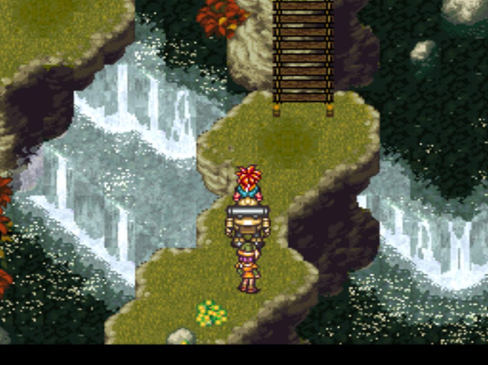
Uma referência para os RPGs clássicos.
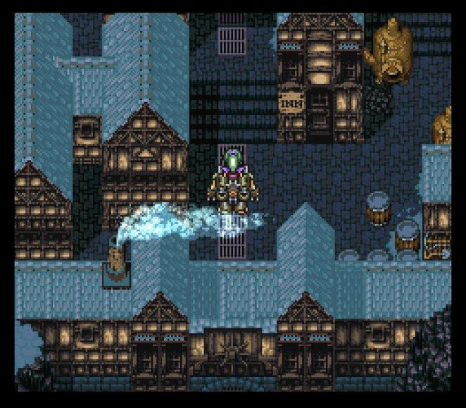
Exploração, criaturas, aventura e nostalgia.
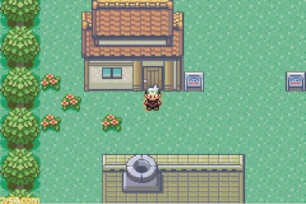
MMORPGs 2D, progressão, combate e exploração.
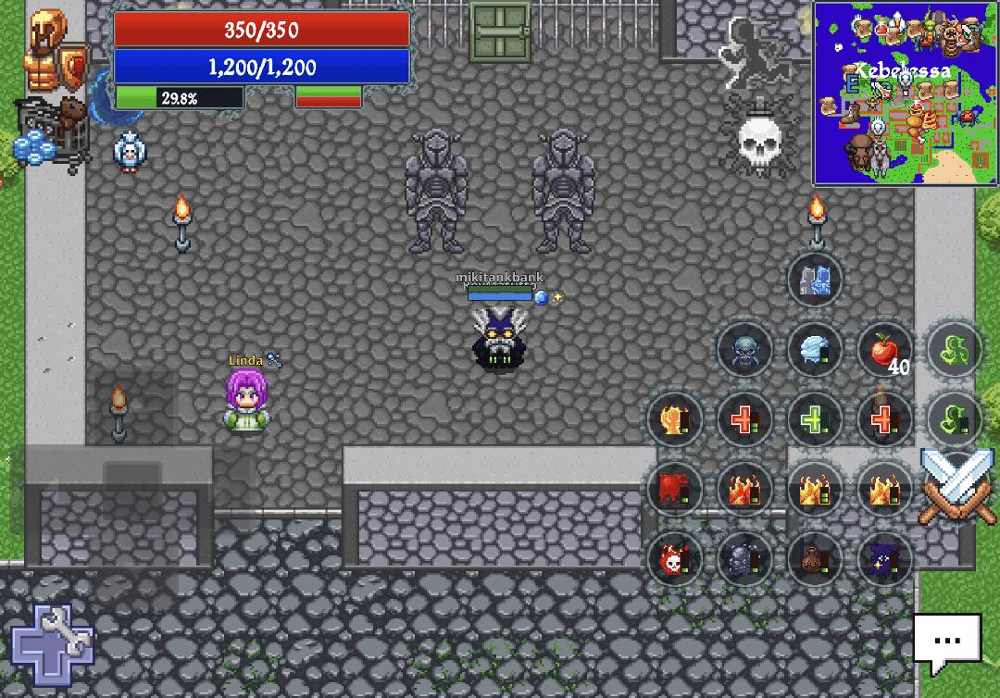
Exploração, construção, descobertas e possibilidades.
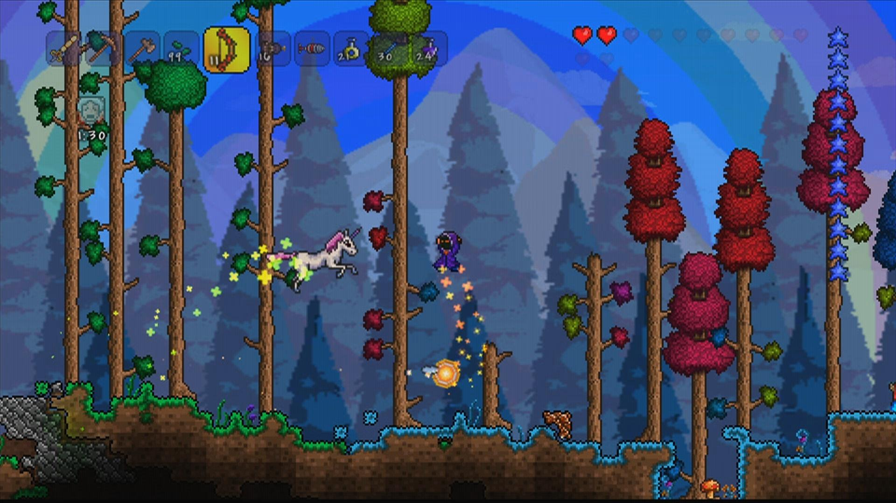
Aventura clássica, masmorras e segredos.
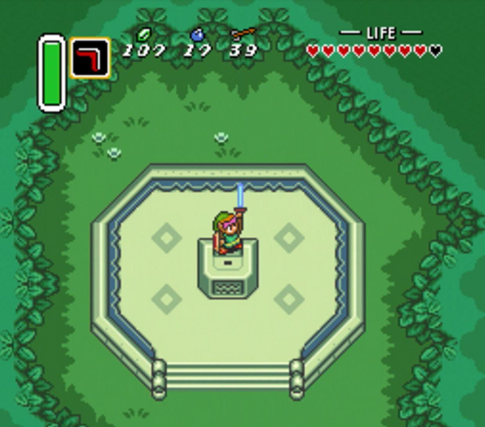
Construção, exploração, mods e liberdade.
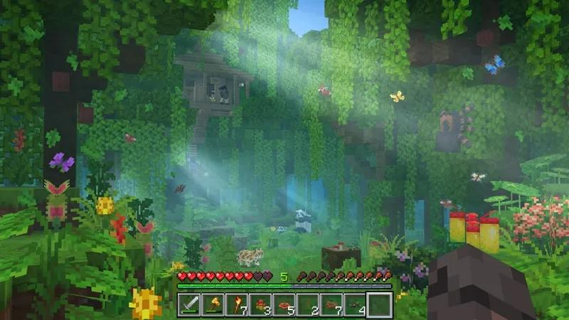
Fantasia sombria, exploração e desafios.
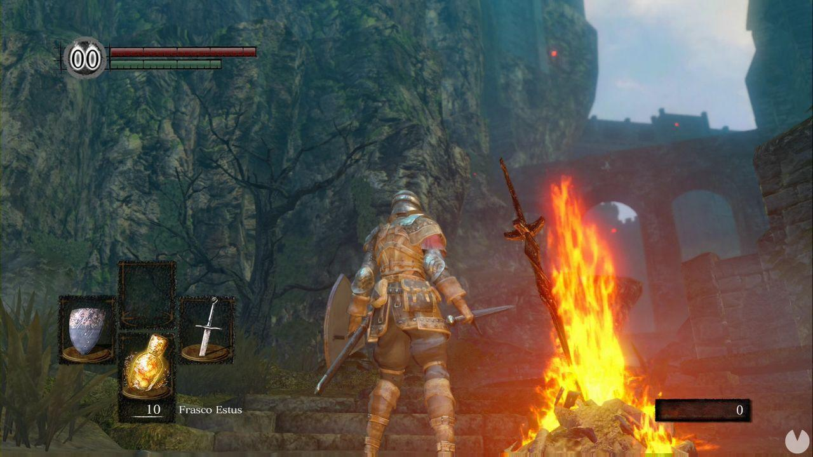
Rotina, natureza, música e vida em outro ritmo.
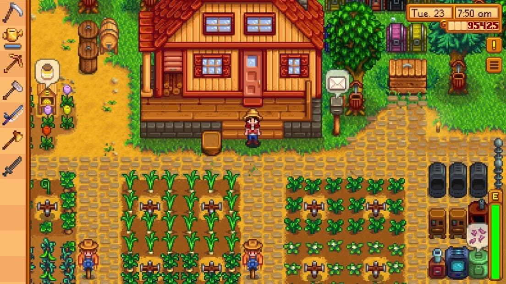
Plataforma clássica e nostalgia dos consoles antigos.
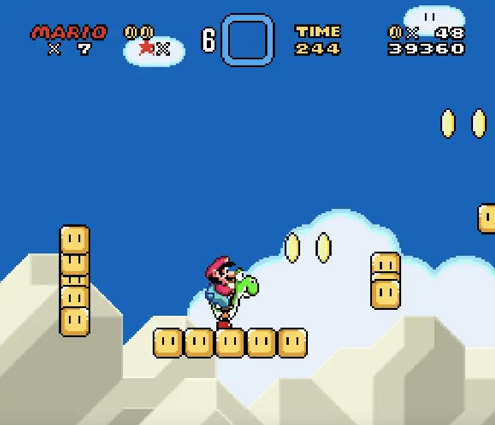
Também quero adicionar jogos favoritos do momento, trilhas sonoras, personagens marcantes, mods de Minecraft, builds, capturas de tela e jogos que quero experimentar.
O jogo de dinossauros continua como um mistério para descobrir depois.
Tenho interesse em compreender as relações sociais, a formação histórica das sociedades e as contradições que atravessam nossa existência. A filosofia e a política me interessam não apenas como campos de estudo, mas como formas de investigar a realidade e questionar aquilo que muitas vezes é apresentado como natural ou inevitável.
O materialismo histórico e dialético é uma referência importante na maneira como procuro compreender a sociedade. Também me interesso pela história dos movimentos sociais, pelas ideias que transformaram o mundo e pelas possibilidades de construir outras formas de organização da vida coletiva.
Não quero apenas acumular conceitos ou repetir ideias prontas. Quero compreender seus fundamentos, investigar suas contradições e relacioná-los à realidade.
Materialismo histórico, crítica da economia política e transformação social.
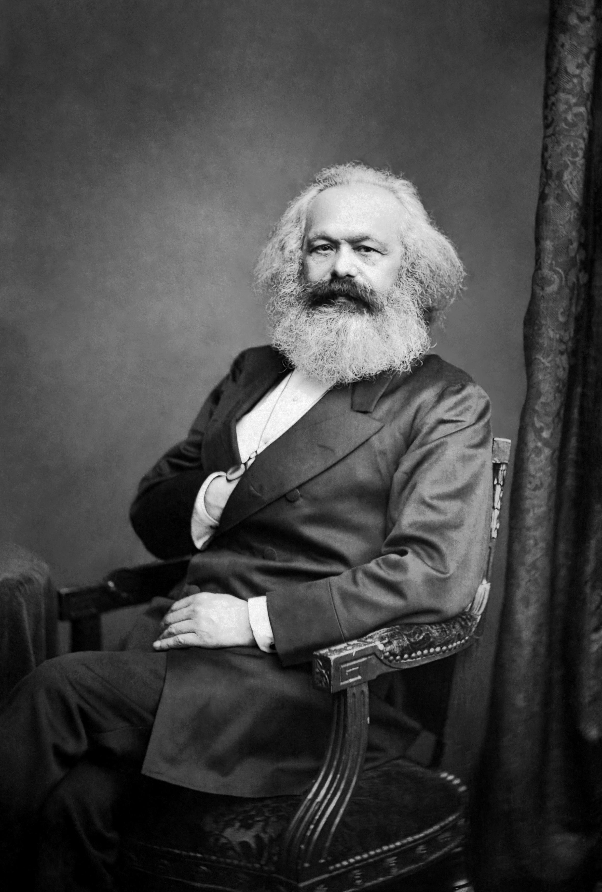
Revolução, imperialismo, organização política e teoria marxista.
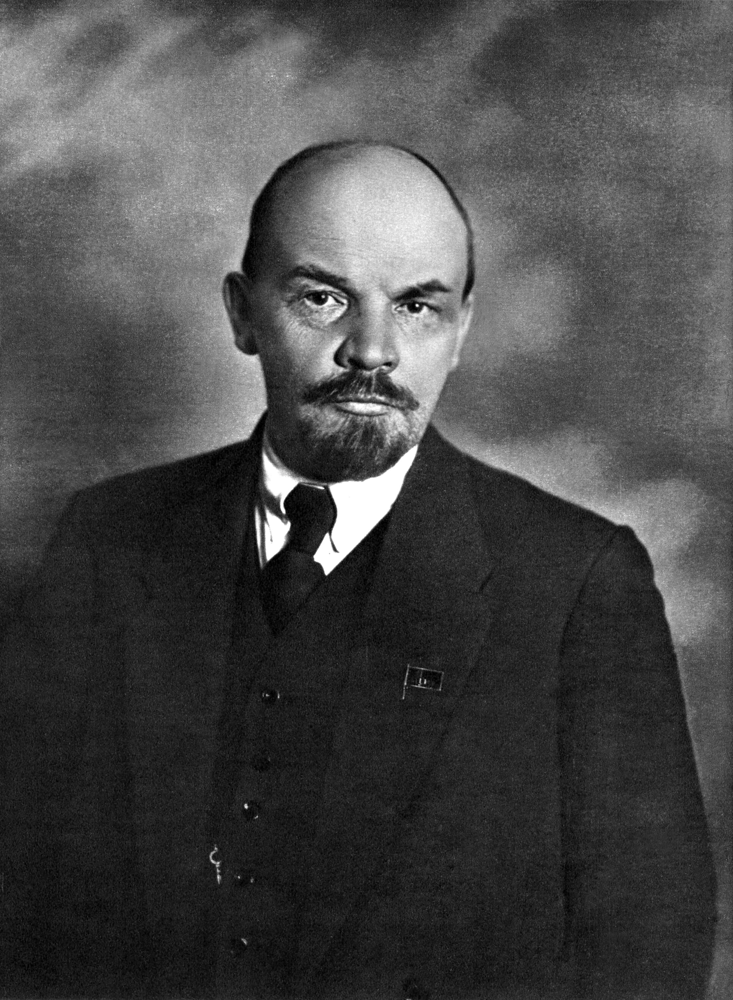
Inconsciente, subjetividade e relações entre indivíduo e sociedade.
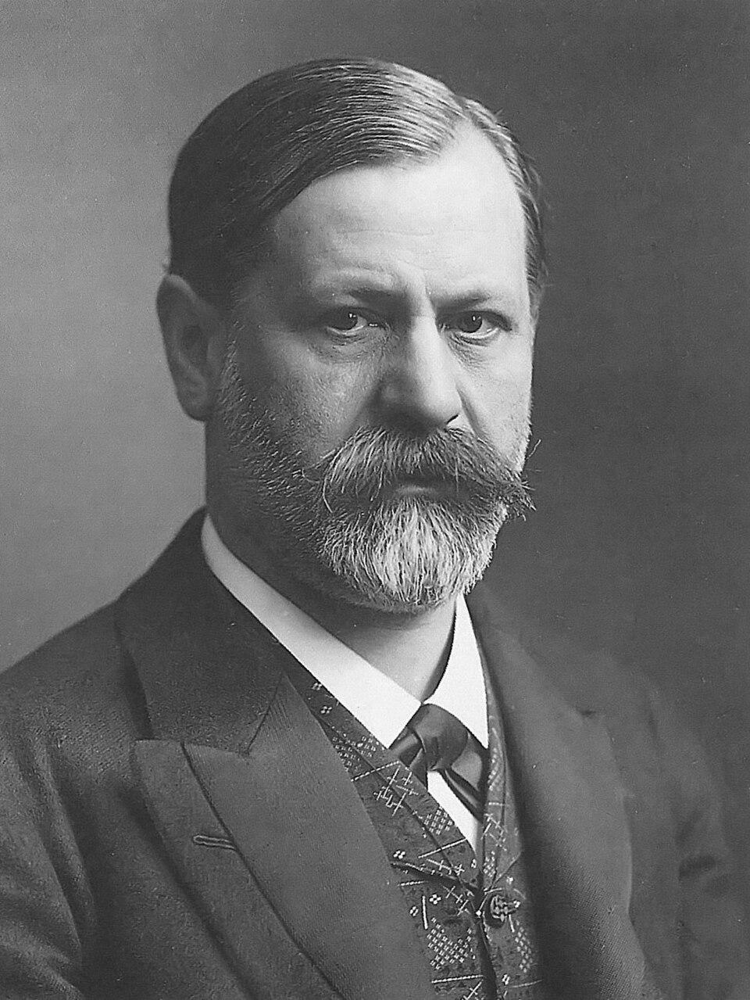
Existência, conflitos humanos, absurdo, alienação e contradições da vida.
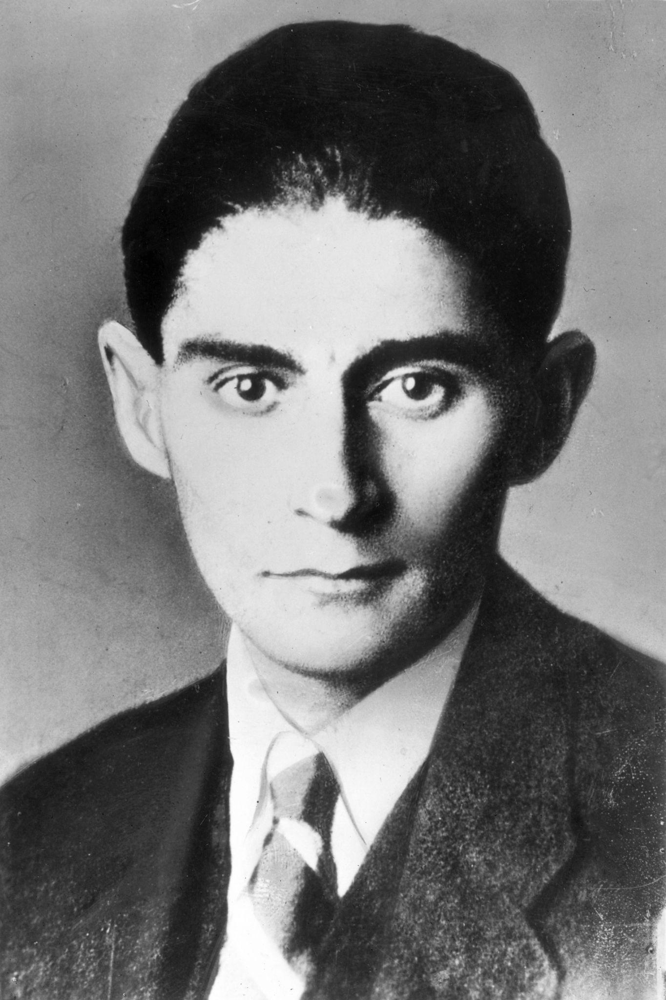
Existencialismo, liberdade, condição humana e relações sociais.